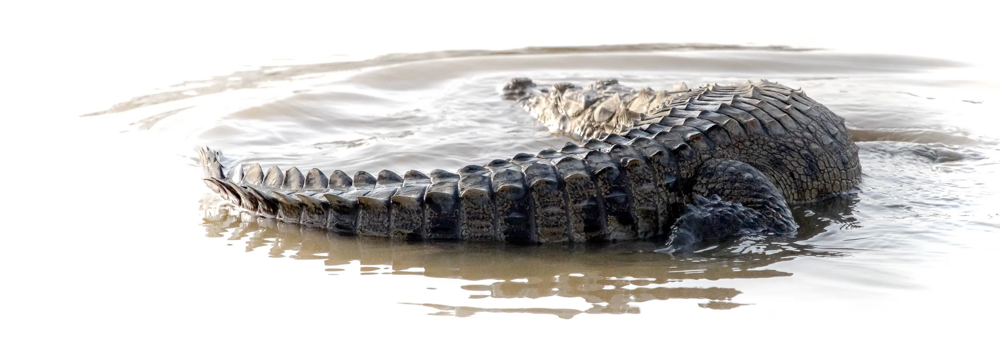
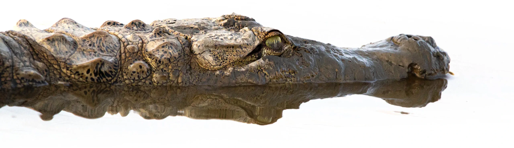

Mahim Pandhi
Wildlife Foundation
The Foundation was established as a not-for-profit organization to fill a vital gap in crocodile research and conservation.
Our team of crocodile specialists works with the crocodiles of the arid region of Kutch, to understand their uniqueness, their adaptation to the harsh conditions of this biome, and their special, conflict-free existence with their human neighbours.
DesertCrocs
Research and Conservation Project
DesertCrocs project aims to under the Mugger crocodile (Crocodylus palustris) in the arid environment of the isolated region of Kutch, India.
We believe these crocodiles may have something unique to show
us.
In 2021, the Foundation worked with the Gujarat Forest Department to conduct the first district-wide crocodile survey in 2 decades, resulting in groundbreaking data that changed the entire outlook for crocodile conservation in the region. This initiative included citizen scientists, from all walks of life, collaborating with crocodile experts and scientists to create a full community driven event.
Read more in Publications.
Crocodile Specialist Group Newsletter 41(2): 4-8

About the Foundation
The Mahim Pandhi Wildlife Foundation was founded to fill the void of conservation and protection of the native crocodiles of Kutch, a unique, isolated part of India. Our small, focused team combines experiences from different fields to approach challenges from new perspectives.
With our flagship project DesertCrocs, we are working towards a better understanding of the unique crocodiles of Kutch. We work with local authorities and communities on educational initiatives to help continue the zero human-crocodile conflict legacy of Kutch, and better understand this fascinating aspect of co-existence.


Self-sufficiency and open exchange
Our prime directive is to study crocodiles while taking the utmost care to preserve their safety, territory, and way of life. We employ cutting edge technologies and inventive methodologies to explore new ways of understanding these animals.
The Foundation is fully self-sufficient and operates on a private budget, without any financial contributions from donors or sponsors, to create a superbly streamlined endeavor that is strictly focused on our work and not administration and fundraising.
Team

Dax Pandhi is a wildlife conservationist, environmentalist, photographer, author, entrepreneur, and software engineer with over 26 years of experience spanning technology, media, and environmental research. He is the co-founder and CEO of QuadSpinner, creators of the Gaea terrain platform, and the founding director of the Mahim Pandhi Wildlife Foundation, a conservation organization focused on crocodilian research, wildlife education, and ecological fieldwork in Western India.
Having witnessed the steady decline of wildlife and natural habitats in Kutch, Gujarat, Dax founded the organization to help address major gaps in conservation, scientific research, and grassroots field support. Over the last several years, his work has focused on the crocodiles of Kutch combining field research, population surveys, coexistence studies, and technology-driven conservation methods such as UAVs and computer-assisted modeling.
He has also contributed to wildlife education, conservation outreach, scientific publications, and collaborations involving students, researchers, local communities, and Forest Department personnel.

Dr. Brinky Desai is a wildlife researcher, conservationist, and crocodilian specialist whose work focuses on the ecology, behavior, physiology, and conservation of Mugger crocodiles across India. She completed her PhD at Ahmedabad University, where her research explored the ecological adaptation and stress physiology of Mugger crocodile populations living in diverse and human-dominated habitats across Gujarat. Her work combines extensive field research, behavioral studies, endocrinology, and emerging technologies such as UAV-based monitoring and biometric identification systems. She is one of the leading voices for Mugger crocodile conservation and research.
As Chief Scientist at the Mahim Pandhi Wildlife Foundation, Dr. Desai leads scientific research, conservation planning, student mentorship, and field initiatives related to crocodilian ecology and human-wildlife coexistence. She has contributed to multiple research papers, conservation publications, and collaborative projects focused on Mugger crocodiles and wetland ecosystems across the Indian subcontinent.
She sits on the IUCN Crocodile Specialist Group Steering Committee and is the co-founder of Early Career Crocodile Network.


Mahim Pandhi
(1946-2006)
The Foundation was created in memory of Mahim Pandhi, a renowned journalist and renaissance man who loved nature. He spent his life practicing his principles of charity and philanthropy. He was a man of action who believed in doing things himself - especially when it came to helping others. He loved to explore nature and shared his garden with cobras, mongooses, and reptiles.
The Mahim Pandhi Wildlife Foundation was founded by his family.
Join the adventure
Researchers
We are looking for like-minded people in the fields of herpetology, zoology, and paleontology - who are interested in collaborating with the DesertCrocs project, and beyond. You will get to work with a team of specialists with decades of experience under their belt, and have access to cutting edge technologies.
Students
Are you an undergraduate or postgraduate student? You can gain valuable work experience in the field by joining our projects on a short-term basis. Get in touch with us for details.